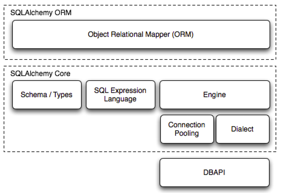

GeoAlchemy
Éric Lemoine
Python (and Javascript) developer at Camptocamp


GeoAlchemy
Use SQL Spatial Databases from Python
What's an SQL Spatial Database?
Quoting Wikipedia:
“A spatial database, or geodatabase is a database that is optimized to store and query data that represents objects defined in a geometric space.”
PostGIS
The Spatial Database extender for PostgreSQL
GeoAlchemy
Provides extensions to SQLAlchemy for working with Spatial databases.
SQLAlchemy
The Database Toolkit for Python
“The SQLAlchemy SQL Toolkit and Object Relational Mapper is a comprehensive set of tools for working with databases and Python.”
SQLAlchemy Architecture
Two parts: SQLAlchemy Core and SQLAlchemy ORM.
SQLAlchemy Philosophy
- It's not about abstracting the DB
- Abstracting is Hiding
- It's about Automation
- Instruct SQLA to do the grunt work we give it
- Relational form of data is preserved
- SQLA provides a rich vocabulary to express decisions made by the developer
“The main goal of SQLAlchemy is to change the way you think about databases and SQL!”
Has anyone heard about Flask, Bottle, Pyramid?
They're great frameworks, with lots of users.
They all love the SQLAlchemy toolkit.
For good reasons!
SQLAlchemy
The Database Toolkit for Python
SQLAlchemy Core / ORM
SQLAlchemy has two distinct areas:
- Core (SQL expression system)
- Object Relational Mapper (ORM)
SQLAlchemy Query Example
user = session.query(User).join(Address).\
filter(Address.email_address=='jack@google.com').\
one()
GeoAlchemy
Thin layer above SQLAlchemy
With the same philosophy
GeoAlchemy Query Example
lakes = session.query(Lake).filter(
Lake.geom.ST_Buffer(2).ST_Area() > 33).all()
It looks like SQLA!
It looks like PostGIS SQL!
Shapely Integration
to_shape and from_shape functions
lake = session.query(Lake).filter(
Lake.geom.ST_Buffer(2).ST_Area() > 33).first()
lake_shape = to_shape(lake.geom)
lake_shape.representative_point().wkt
Status
Version 2 released 6 months ago (03/17/2013)
https://geoalchemy-2.readthedocs.org
- Benefits from SQLALchemy's latest advances
- Improved API
- Works both with SQLA Core and ORM
- PostGIS 2 support (Raster included)
- Fully documented and tested
Exposure
Used in production
- Many client projects by Camptocamp
- The SkyLines project (https://www.skylines-project.org))
By Tobias Bieniek (@Turbo87)